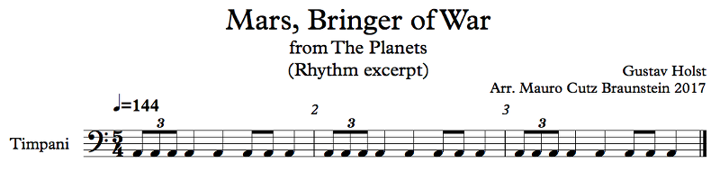
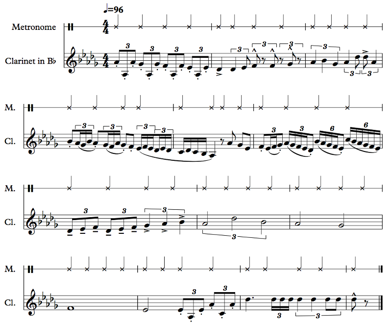
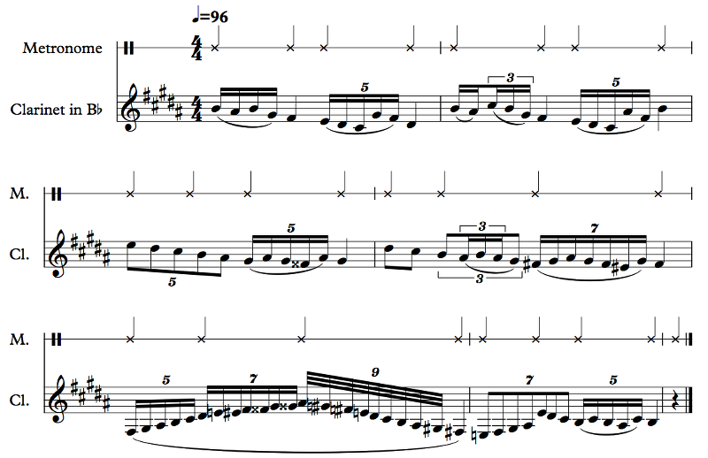
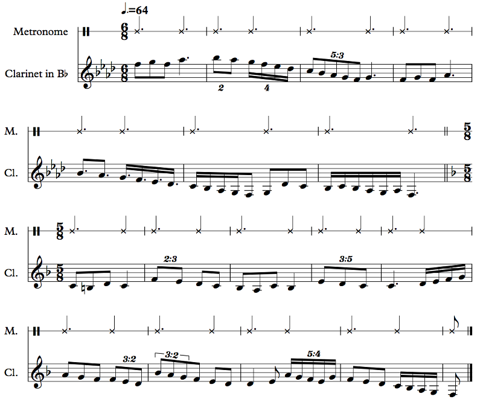

We generally use whole notes, half notes, quarter notes, eighth notes, 16th notes, etc.; each successive note is half of the previous one. But what happens when we want to divide a note into a number of parts other than a power of 2? Like if we want to split it into thirds or something? Well, we have a solution to that:
I think you may have zoned out for more than just a sec. But yeah, kinda. Tuplets are when you split a note into divisions other than 2. We've talked about triplets before, so let's review that:
Example 2.12 (again)
No duh. It was four examples ago. I just copied it here. Anyway, it's the main rhythm of Mars from The Planets, as you can obviously see, but the interesting thing here is beat 1 of each measure: the triplet. These are eighth note triplets. What this notation means is each of those eighth notes is a third of a quarter note instead of half: in other words, 3 notes in the space of 2. Triplets are by far the most common tuplet. Here's how triplets sound:
Example 2.17
6's are obviously sextuplets. What you're seeing, though, is the kind of inexactitude of notation. Let's go through what I'm demonstrating here. Measure 1, simple triplets. Measure 2, beat 2, that you can have quarter notes in there too. Obviously the quarter note triplet is twice the length of the eighth note triplet, so you can get kind of a 6/8 feel by doing this. Measure 2, beat 3, that you can have rests in there too. Measure 3, quarter note triplets, also known as drag triplets. These are pretty common, and they kind of feel like a rhythm that's slowing down (even though they're in time). You should learn the sound of quarter note triplets. Measure 4, some examples of 16th note triplets. Here, three 16th note triplets make an eighth note. On beat 4, I have two groups of 16th note triplets. Measure 5, beat 1, I contrast those 16th note triplets with straight 16ths. Measure 6, there's more rhythmic contrast inside the triplet... but look at beats 2 and 3. They have the same rhythm, but one has a 3 and the other has a 6! What gives? Well, beat 4 is a clue: 6 16th notes make sextuplets. These are grouped differently from the two groups of 16th note triplets in measure 4, but they have the same length. The difference is the same as between 3/4 and 6/8; both time signatures have the same number of eighth notes, but the stressed beats are different. Measure 8 there are half note triplets; those are relatively uncommon because they're difficult to feel; you have to actually count.
I don't usually count with the "1 e + a 2" thingy from Chapter 1. I just don't like it. Some people say "1 la li 2 la li" with triplets, but that sounds stupid, no offense. So I just say "ta ta ta ta ta ta". Good enough! So for eighth note triplets, you have | ta ta ta | ta ta ta | ta ta ta | ta ta ta |. For quarter note drag triplets, you have | TA ta TA | ta TA ta | TA ta TA | ta TA ta |. For half note triplets (also sometimes called drag triplets), you have | TA ta ta | ta TA ta | ta ta TA | ta ta ta |. It takes a lot of concentration to do that. There's a little trick that works for some people: PASS the GODdamn SUgar. Actually, that's more for 4 against 3 than 3 against 4. The point is PASS, GOD, and SU are the triplets, and PASS, the, damn, and gar are the beats. Eh. Yeah, this is actually really difficult. Just count. It'll make it easier.
Let's get back to your question about the 6's. The correct note to use in a tuplet is the next denomination up. So, if you want to put three notes in a quarter note, the denomination up from that is the eighth note. Tuplets generally (we'll get to the exception) fit more notes than usual. So usually you have two eighth notes in a quarter note; use a triplet and you can get three. There are four 16th notes, so the right note to use is the eighth note, of which there are only two. So it turns out that a 16th note triplet is the same as a 16th note sextuplet. You fit 3 16th note triplets in an eighth note, and you fit 6 16th note sextuplets in a quarter note. They're the same. Which you use is a matter of taste. So, in measure 6, beat 2 has the first two eighth notes turned into 16th notes, and beat 3 has the last two 16th notes turned into an eighth note. Potato, potato.
Of course, you can also have quintuplets, septuplets, nonuplets, decuplets, you name it. Quintuplets are usually harder to get right. Septuplets are pretty tricky to get right, but most of the time you don't actually need to be exact with them; there's some sort of run or whatever and you just start and end at the right time and that's what matters. Nonuplets aren't as difficult because they're just a triplet of triplets. Here are some basic examples:
Example 2.18
Hah, yeah. Measure 5, you see that Fx and that Gx in beat 2? I'll explain in a later chapter why they're useful in chromatic runs like this, but the problem is that in beat 3 I wanted to cancel them and use the F# and G# in the key signature. The traditional way to cancel a double accidental, for some reason, is to do a natural and a sharp (or flat, for a double flat). I'm not sure why. These days there's no reason to do this as it's fairly archaic, but you may come across it someday so there it is. The low G# and F# later in the measure are added by Sibelius automatically and they're cautionary accidentals; the previous accidentals don't actually affect those notes since they're in a different octave, but you might get confused and forget, so, hey, better to be safe!
Nested tuplets! I don't think I've ever actually seen them in music, but there's no reason why they can't exist, and in this case they're not even that tough to play (unlike the eighth note septuplets at measure 6). Obviously the 16th note triplets in that triplet take the space of one eighth note in that triplet.
Let's go through this example measure by measure. First, it's probably too hard, rhythmically, for you to sing or play through it. That's fine. I would probably never write this for a human player anyway. Eh, maybe I would. But even a professional would need to spend a while practicing these rhythms; luckily, the computer can play it easily. It's just a demonstration for you. So, measure 1, we have a contrast between 16th notes and quintuplets. Measure 2, we have a fairly common 5-note figure, two 16th notes and three 16th note triplets, contrasted with the even quintuplets. Measure 3, a demonstration of eighth note quintuplets. They're not actually that hard to get the hang of, but they don't come up often either. Measure 4, a demonstration of nested tuplets and a set of septuplets. Measure 5, a bunch of scalar and chromatic runs featuring nonuplets, and measure 6, eighth note septuplets just to mess you up (I'm sure someone out there can play those accurately, but it's sure as hell not me).
The nonuplets in measure 5 use 32nd notes, of course, since there are 8 32nd notes in a beat and we want to squeeze in 9 notes. The interesting thing is that the nested triplets in measure 4 use 16th notes. Those 16th note triplet triplets have the same length as the 32nd note nonuplets! That's weird, right? Actually, you probably didn't even notice that, because it's not weird. The next denomination up from the nonuplets in measure 5 is the 32nd note, but in measure 4 the next denomination up from the triplet inside the triplet is the 16th note inside the triplet. A bit of an interesting mathematical case.
What happens in 6/8? This mehsuggas happens in 6/8:
Example 2.19
Yep. Let's start from the op. Measure 2, we have duplets and quadruplets. Remember what I said about going the next denomination up? Well... Yeah, I don't know either. The duplets are 2 in the space of 3. You may ask why they don't just write it like I did in measure 5. I don't know. I do it like in measure 5. I think duplets are inconsistent and stupid. But other composers like them. Same with the quadruplets. I think the dotted notes are just as easy to understand, if not more. The basic beat is a dotted quarter note, so why wouldn't you use a dotted eighth note for half of it, or a dotted 16th note for a fourth, etc.? (By the way, 6/8 does use dotted half notes, and 12/8 uses dotted whole notes too, as do 6/4 and 3/2.)
The interesting one is the ratio. You can read a ratio p:q as p notes in the space of q. So, in bar 3, you have 5 eighth notes in the space of 3, so it's a 5:3 tuplet. Note that regular tuplets like the duplet and the ordinary triplet have these guys implicitly, so in bar 2 of the 5/8 section, that's a duplet just like in bar 2 of the 6/8 section. The 3:2's are ordinary triplets, and the 5:4 is an ordinary set of quintuplets. The weird one here is the 3:5, 3 eighth notes in the space of 5. I think quarter notes make more sense, honestly, but you can't get an easy fraction using those (I'd have to do 6:5 with eighth notes and change them to quarter notes, but it's a triplet). It's kind of weird, but I've actually seen this in real music and it's a bitch to play (Albéniz's Zortzico). The triplets are quarter note triplets, and there's no ratio marked, just the 3, but you can tell from context how it's supposed to go (since it's a 5/8 bar).
This piece does something even weirder, actually: two time signatures at the same time. It's fairly common, but it's oh so weird. The idea is that different parts are playing with different subdivisions. What Albéniz does is to have the right hand in 2/4 playing half notes while the left hand is in 5/8 doing the 5/8 stuff. The measures still line up; the 2/4 is in the same time as the 5/8. It's just that it's easier to notate half notes than to do dotted quarter notes tied to quarter notes. I wouldn't do this myself, but I'm not Albéniz. I've also seen a similar thing in Persichetti's Symphony No. 6, where in the third movement some people are in 2/4 while others are in 6/8. This is to avoid writing duplets and quadruplets in 6/8 (or triplets in 2/4). The conductor's beats are the quarter note in 2/4 and the dotted quarter in 6/8, so there's no trouble following.
That said, some composers will write different time signatures in different parts where the measures don't line up. Like, one person plays in 3/4 and another person plays in 4/4, and the beats line up but the measures don't.
Very confusingly, I'm sure!
No, you're thinking of melisma.
Eh. Sorry, that was a joke. Melisma is when a singer sings many notes while on the same syllable. The disease is melanoma.
Timing.
There was a joke there. I forgot what it was. But the punchline was "timing".
No, no, it would have made sense! Seriously! Anyway, hemiola, right. That's when you play 3 against 2. It can be kind of tricky, but not really. An example would be drag triplets against regular quarter notes, or dotted quarter notes in 3/4 against regular quarter notes (or, vice-versa: quarter notes in 6/8 against dotted quarter notes). But hemiola is simple. The more complex stuff is when you have 3 against 4, or 5 against 3, stuff like that.
Funny you should ask! See the Hemiola Metronome below:
The high notes are the metronome beats at the specified tempo, and the low notes are in the specified ratio. So if you set it to 4/3, there will be four of the low notes for every three of the high ones. You can start counting by listening for when they actually come together. I recommend tapping on the actual beats and singing (or saying "ta") on the notes you're trying to match against the beats. I should warn you, though, as fun as this is, you'll probably survive just fine without it. On the other hand, try mastering quintuplets while walking! If you're trying to do a pattern, try to assign pitches to the notes in the pattern to help you keep track of where you are.
I actually wrote a piece, Club Groove, where there's an instrument doing a low note on every beat in 4/4, another instrument doing a bass note on the quarter note quintuplet (5:4), and eventually another one doing a little melody on the quarter note septuplet (7:4). You can hear what a complete mess that is! Note that it's also a microtonal piece, meaning that it uses notes in between the notes on the piano (it's in 24-TET, specifically, if you know what that means).
Hm, how to describe it without getting derailed... OK. You know how there are 12 notes in an octave? What if, between every two notes, we stuck in another note? So, like, between D and D# there's a D-half-sharp? That's 24-TET, which stands for 24-tone equal temperament. Some theorists don't really like this name and prefer to call it 24edo, or 24 equal divisions of the octave. I use the -TET out of habit; edo is probably more correct. We'll hopefully get to this in a later chapter. A much later chapter.
Before we move on from rhythms, let's talk about something important: